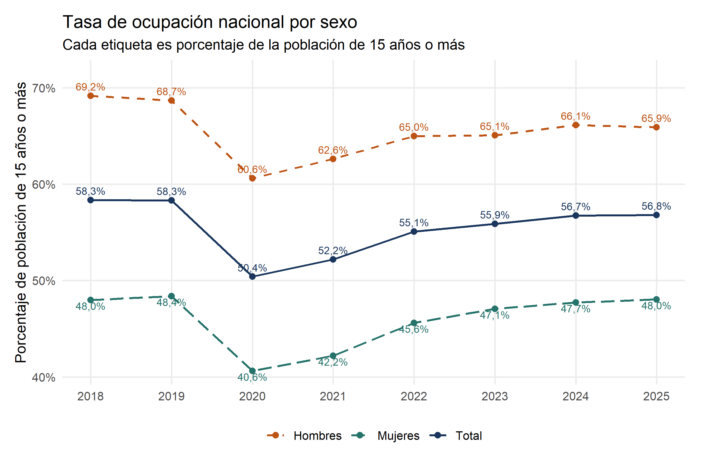
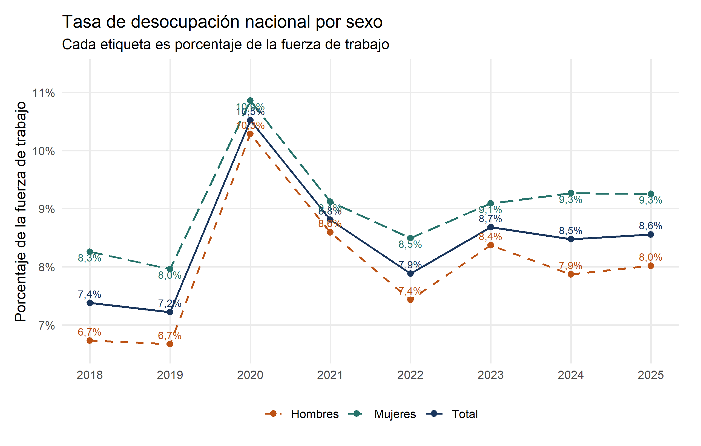
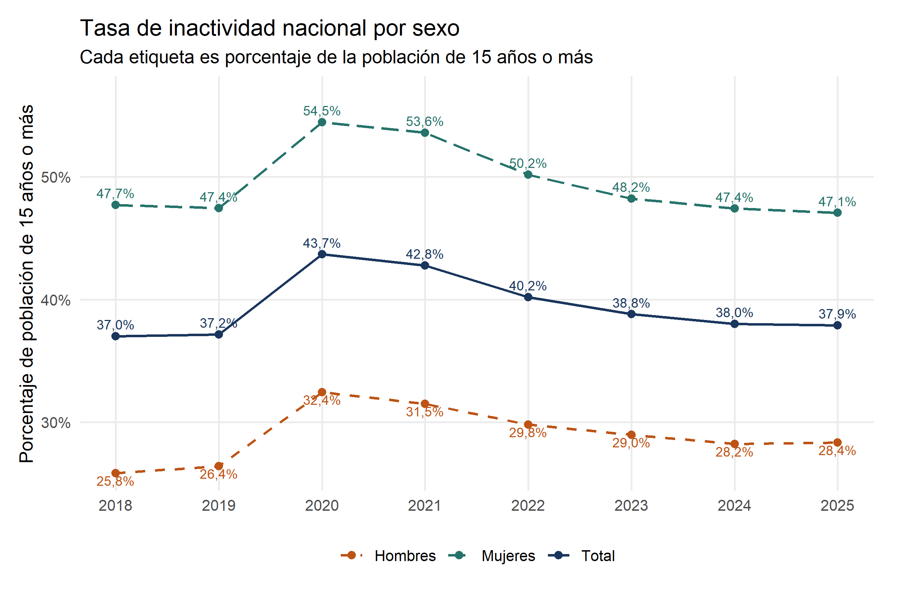
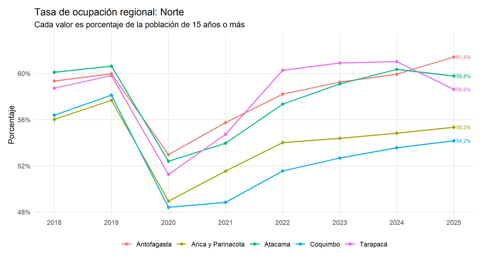
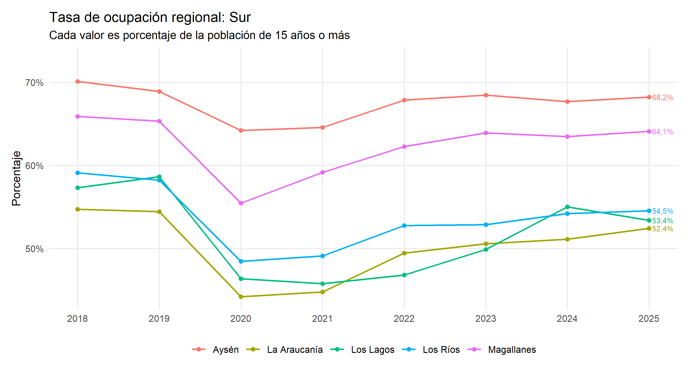

En 2025, la tasa de desocupación anual fue 8,6% y la tasa de ocupación 56,8%. Miden fenómenos distintos y usan denominadores diferentes.
Ocupación nacional por sexo
Cada etiqueta muestra la tasa de ocupación: ocupados como porcentaje de la población de 15 años o más. Total, Hombres y Mujeres usan el mismo denominador, por lo que se pueden comparar directamente.
Código
# Ocupación nacional: Total, Hombres y Mujeres. Cada etiqueta es porcentaje de 15+.g_ocupacion <- d |>mutate(etiqueta=paste0(n(ocupacion_pct,1),'%'),ajuste=case_when(sexo=='Mujeres'~1.25, TRUE~-.7))print(ggplot(g_ocupacion,aes(anio,ocupacion_pct,colour=sexo,linetype=sexo))+geom_line(linewidth=.8)+geom_point(size=2)+geom_text(aes(label=etiqueta,vjust=ajuste),show.legend=FALSE,size=3)+scale_colour_manual(values=c(Total=paleta[1],Hombres=paleta[2],Mujeres=paleta[3]))+scale_linetype_manual(values=c(Total='solid',Hombres='dashed',Mujeres='longdash'))+scale_x_continuous(breaks=2018:2025)+scale_y_continuous(labels=scales::label_number(suffix='%',decimal.mark=','),expand=expansion(mult=c(.05,.13)))+labs(title='Tasa de ocupación nacional por sexo',subtitle='Cada etiqueta es porcentaje de la población de 15 años o más',x=NULL,y='Porcentaje de población de 15 años o más',colour=NULL,linetype=NULL))

Fuente: INE, ENE, estimaciones anuales. Cada etiqueta es ocupados como porcentaje de la población de 15 años o más.
Cómo leer el gráfico. En 2025 la ocupación llega a 65,9% entre los hombres y a 48,0% entre las mujeres: una diferencia de 17,9 puntos porcentuales. La brecha describe la proporción de cada población que está ocupada; no informa por sí sola tipo de jornada, remuneración, formalidad ni razones de la menor participación laboral femenina.
Desocupación nacional por sexo
Cada etiqueta muestra desocupados como porcentaje de la fuerza de trabajo. Total, Hombres y Mujeres se pueden comparar porque usan este mismo denominador. No es el complemento de la ocupación, que usa otro denominador.
Código
# Desocupación nacional por sexo. Cada etiqueta es porcentaje de la fuerza de trabajo.g_desocupacion <- d |>mutate(etiqueta=paste0(n(desocupacion_pct,1),'%'),ajuste=case_when(sexo=='Mujeres'~1.25, TRUE~-.7))print(ggplot(g_desocupacion,aes(anio,desocupacion_pct,colour=sexo,linetype=sexo))+geom_line(linewidth=.8)+geom_point(size=2)+geom_text(aes(label=etiqueta,vjust=ajuste),show.legend=FALSE,size=3)+scale_colour_manual(values=c(Total=paleta[1],Hombres=paleta[2],Mujeres=paleta[3]))+scale_linetype_manual(values=c(Total='solid',Hombres='dashed',Mujeres='longdash'))+scale_x_continuous(breaks=2018:2025)+scale_y_continuous(labels=scales::label_number(suffix='%',decimal.mark=','),expand=expansion(mult=c(.08,.17)))+labs(title='Tasa de desocupación nacional por sexo',subtitle='Cada etiqueta es porcentaje de la fuerza de trabajo',x=NULL,y='Porcentaje de la fuerza de trabajo',colour=NULL,linetype=NULL))

Fuente: INE, ENE, estimaciones anuales. Cada etiqueta es desocupados como porcentaje de la fuerza de trabajo.
Cómo leer el gráfico. En 2025 la desocupación es 8,0% para los hombres y 9,3% para las mujeres, una diferencia mucho menor que la observada en ocupación. Esto ocurre porque la desocupación se calcula solo entre quienes integran la fuerza de trabajo; quienes no trabajan ni buscan empleo quedan fuera de este denominador.
Inactividad nacional por sexo
La inactividad muestra la proporción de personas de 15 años o más que no trabaja ni busca empleo activamente. Se calcula como 100% menos la tasa de participación. Por ello, no debe confundirse con desocupación.
Código
# Inactividad = 100% menos participación laboral. Incluye quienes no buscan empleo activamente.g_inactividad <- d |>mutate(inactividad_pct=100-participacion_pct,etiqueta=paste0(n(inactividad_pct,1),'%'),ajuste=case_when(sexo=='Hombres'~1.25, TRUE~-.7))print(ggplot(g_inactividad,aes(anio,inactividad_pct,colour=sexo,linetype=sexo))+geom_line(linewidth=.8)+geom_point(size=2)+geom_text(aes(label=etiqueta,vjust=ajuste),show.legend=FALSE,size=3)+scale_colour_manual(values=c(Total=paleta[1],Hombres=paleta[2],Mujeres=paleta[3]))+scale_linetype_manual(values=c(Total='solid',Hombres='dashed',Mujeres='longdash'))+scale_x_continuous(breaks=2018:2025)+scale_y_continuous(labels=scales::label_number(suffix='%',decimal.mark=','),expand=expansion(mult=c(.05,.13)))+labs(title='Tasa de inactividad nacional por sexo',subtitle='Cada etiqueta es porcentaje de la población de 15 años o más',x=NULL,y='Porcentaje de población de 15 años o más',colour=NULL,linetype=NULL))

Fuente: INE, ENE, estimaciones anuales. Cada etiqueta es inactivos como porcentaje de la población de 15 años o más; cálculo propio como 100 menos participación.
Cómo leer el gráfico. En 2025 la inactividad alcanza 47,1% entre las mujeres y 28,4% entre los hombres. Esta diferencia ayuda a entender por qué la brecha de ocupación es amplia aunque las tasas de desocupación sean cercanas: una fracción mayor de mujeres está fuera de la fuerza de trabajo. La serie no identifica las razones de esa inactividad.
Evolución regional por macrozona
Las 16 regiones en una sola figura impedirían distinguir las líneas. Por eso se presentan seis gráficos: ocupación y desocupación por separado para cada macrozona. El porcentaje de 2025 queda escrito al final de cada línea.
Norte: ocupación
Código
print(grafico_macrozona('Norte','ocupacion_pct'))

Fuente: INE, ENE, estimaciones anuales por región. Ocupación: porcentaje de la población de 15 años o más.
Cómo leer el gráfico. En 2025 la ocupación del norte va desde 54,2% en Coquimbo hasta 61,4% en Antofagasta. Las líneas permiten ver trayectorias regionales, pero la distancia entre ellas no debe interpretarse automáticamente como efecto de una política: también reflejan estructuras productivas y demográficas diferentes.
Fuente: INE, ENE, estimaciones anuales por región. Desocupación: porcentaje de la fuerza de trabajo.
Cómo leer el gráfico. En 2025 la desocupación se ubica cerca de 6,8% en Arica y Parinacota y Antofagasta, y llega a 9,2% en Atacama. El orden regional puede cambiar de un año a otro; sin intervalos de confianza no afirmamos que diferencias pequeñas sean estadísticamente significativas.
Fuente: INE, ENE, estimaciones anuales por región. Ocupación: porcentaje de la población de 15 años o más.
Cómo leer el gráfico. En 2025 la Región Metropolitana registra la ocupación más alta de la macrozona, con 59,9%, mientras Biobío y Ñuble se sitúan cerca de 51%–52%. La comparación dimensiona diferencias territoriales, pero no mide calidad del empleo ni informalidad regional.
Fuente: INE, ENE, estimaciones anuales por región. Desocupación: porcentaje de la fuerza de trabajo.
Cómo leer el gráfico. En 2025 Maule presenta 7,4% de desocupación y Ñuble 9,7%, los extremos de la macrozona en ese año. Estas tasas deben leerse junto con ocupación y participación: una tasa menor no siempre significa que una mayor proporción de la población esté trabajando.
Sur: ocupación
Código
print(grafico_macrozona('Sur','ocupacion_pct'))

Fuente: INE, ENE, estimaciones anuales por región. Ocupación: porcentaje de la población de 15 años o más.
Cómo leer el gráfico. La dispersión del sur es amplia en 2025: Aysén alcanza 68,2% de ocupación y La Araucanía 52,4%. Las regiones tienen tamaños y composiciones distintas, de modo que el gráfico compara tasas y no cantidades de personas ocupadas.
Fuente: INE, ENE, estimaciones anuales por región. Desocupación: porcentaje de la fuerza de trabajo.
Cómo leer el gráfico. En 2025 Aysén registra 4,2% de desocupación y La Araucanía 8,8%. La menor tasa de Aysén coincide con una ocupación alta, pero el gráfico sigue siendo descriptivo: no identifica qué sectores, políticas o movimientos poblacionales explican la diferencia.
Lectura y limitaciones
Las series muestran diferencias por sexo y variaciones del mercado laboral. No identifican cuántos puestos generaría un incentivo ni cuántas contrataciones ocurrirían de todas formas.
Empleo total no equivale a empleo formal. Este Excel no desagrega informalidad. Como referencia documental separada, la separata anual ENE 2025 informa una tasa anual de ocupación informal de 26,2%; no se transforma ese dato aislado en una serie inventada.
La tasa de ocupación divide ocupados por población de 15 años o más; desocupación divide desocupados por fuerza de trabajo. Sus porcentajes no son complementarios.
Son estimaciones de una encuesta, sujetas a error muestral y revisiones. No se afirma significancia estadística de las diferencias; estos gráficos no incluyen intervalos de confianza.
Se usan las estimaciones anuales publicadas por el INE, sin promediar trimestres móviles superpuestos. El CSV conserva también niveles de ocupados, expresados en miles.
Las comparaciones regionales son descriptivas. El INE advierte que una mayor desagregación puede implicar menor precisión estadística; estos gráficos no incorporan intervalos de confianza ni evalúan significancia de las diferencias.
Preguntas que estos datos dejan abiertas
¿Quiénes serían elegibles, cuántos empleos formales adicionales se crearían y cuánto durarían? Responderlo requiere remuneraciones, informalidad, reglas de acceso y una comparación que distinga nuevas contrataciones de puestos que habrían existido de todas formas o de sustituciones entre trabajadores.